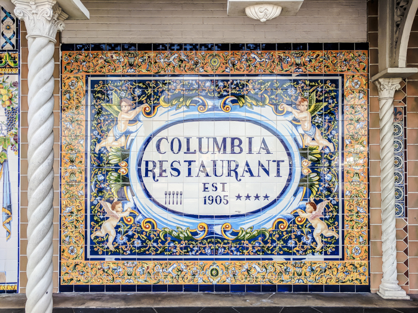
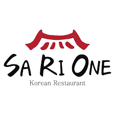
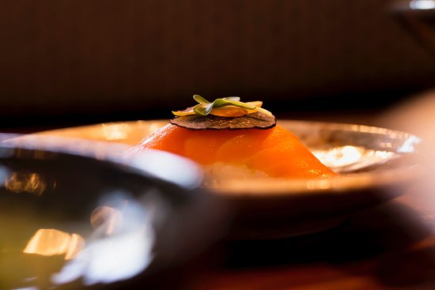
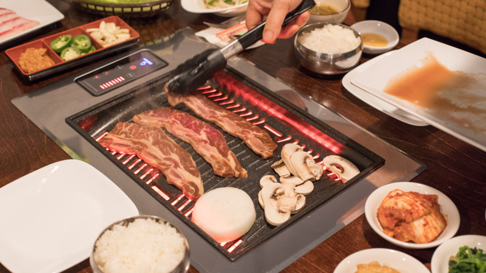
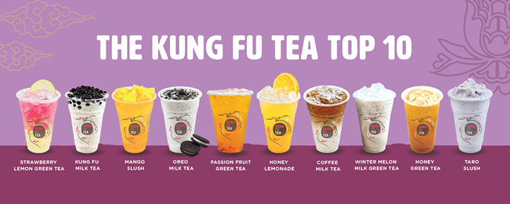
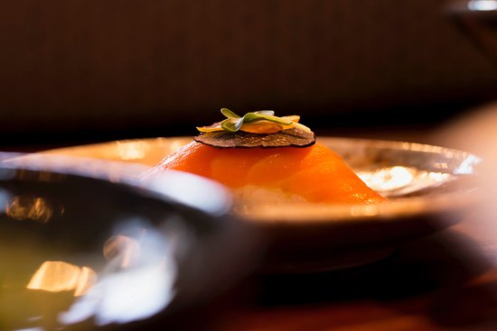
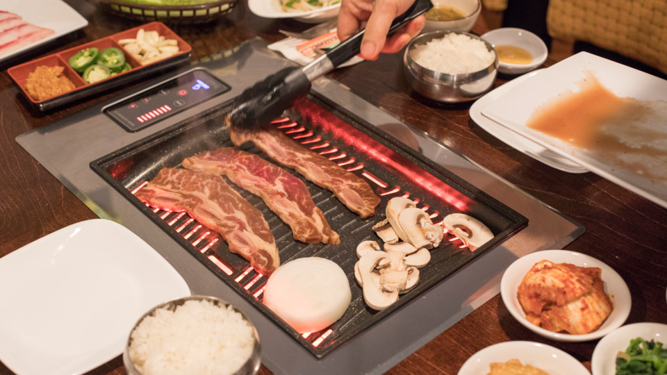
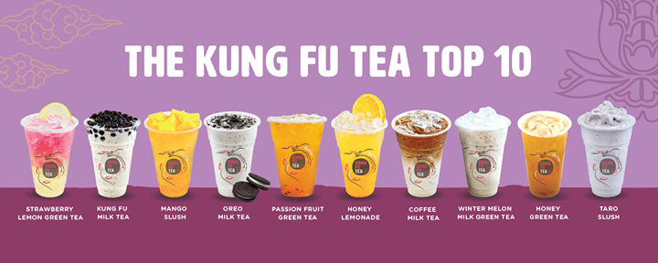

|
 |
Columbaia Restaurant
Spanish and Cuban Cuisine
The original Columbia Restaurant, located in the historic Ybor City neighborhood in Tampa, Florida, is the oldest continuously operated restaurant in Florida, the oldest Spanish restaurant in the United States and one of the largest Spanish restaurants in the world with 1,700 seats in 15 dining rooms taking up 52,000 square feet over an entire city block. Founded in 1905 in, the landmark is still owned by the Hernandez/Gonzmart family and serves Spanish and Cuban cuisine. |
|
|
Noble Rice
Janpanese Cuisine
Noble Rice is Chef Eric and Adriana Fralick’s iteration on modern Japanese. An exciting array of dynamic flavors and new techniques are used to bring new life to classic Japanese dishes. Only the very best ingredients are sourced for their hyper seasonal menu. You may order a la carte or leave it up to the chef and splurge on one of the ever changing omakase experiences. Noble Rice offers a seven course omakase and 15 course Grand Tasting omakase. Each tasting can be expertly paired with an optional sake and wine pairing. |
|
 |
Sa Ri One Grill
Korean Cuisine
The Sa Ri One serves authentic Korean meals. This restaurant offers customers a cozy dining experience. Styled like a local diner, the restaurant is decorated in simple Korean décor. The ambience is quiet and aromatic. The Sa Ri One staff is patient and attentive. The restaurant serves generous food portions and the service is quick. There is plenty of parking outside the restaurant. |
|
|
Yummy Hourse
Chinese Cuisine
John Zhao and Tommy Tang are the founding partners and owners of Yummy House Tampa. Both from Toishan, China, they share the same passion and devotion to the highest quality and standards of Chinese culinary skills. They believe in satisfying the customer at all times, however never fear offering the authentic cuisine of Chinese cooking and educating the consumer. |
|
|
Kung Fu Tea
Beverage Shop
“Unrivaled quality, utmost attention to detail and unquestionable authenticity, that is the Kung Fu Tea culture.”
— KUNG FU TEA FOUNDERS (MICHAEL, RAY, ALLEN, SEAN) |
 |
Ice Smile
Rolled Ice Cream
This sweet spot isn’t your typical ice cream shop. Icesmile uses an East-Asian style of creating ice cream. A steel pan is chilled to -35 degrees. Dairy/Soy milk is then poured onto the pan along with a variety of flavors and rolled. The process takes roughly two minutes. |
 




